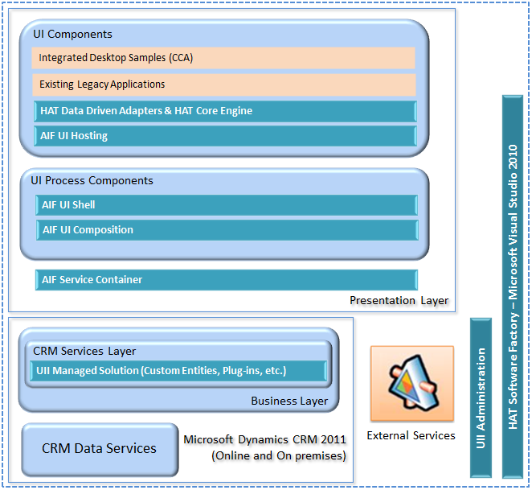

UII is built on top of the Microsoft Dynamics CRM 2013 infrastructure. The following diagram illustrates its functional architecture.

The Microsoft Dynamics CRM system contains UII custom entities, plug-ins, and web resources. These are installed through the UII customer relationship management (CRM) managed solution import process. The external services can range from legacy applications to modern service-oriented applications.
The Presentation Layer block describes how UII works on the desktop. The UII Process components contain the Application Integration Framework (AIF). The AIF is the engine that creates instances of the hosted applications, manages their life cycles, and handles the event brokering between them. The UII components are the UI level of the system, including the desktop itself, the hosted applications, and the Hosted Application Toolkit (HAT) automations or custom adapters that handle the hosted application.
The following are brief descriptions of the UII architectural components shown in the illustration:
- UI Components – These components are used to compose the UI for an Integrated Agent Desktop and hosting applications.
- UII Process Components – These provide the basic framework for developing the UII shell.
- AIF Service Container – This contains all the AIF services.
- CRM Services Layer – This layer consists of UII custom entities, web resources, and plug-ins that are deployed on the CRM server through the UII CRM managed solution process.
- UII Administration – This component is used for managing the UII configuration. This includes UII hosted and non-hosted applications, adapters, workflows, workflow steps, and options.
- HAT Software Factory – This component provides a UII automation development environment hosted in Visual Studio 2010 that includes an Application Inspector and automation designer activities.
 In This Section
In This Section